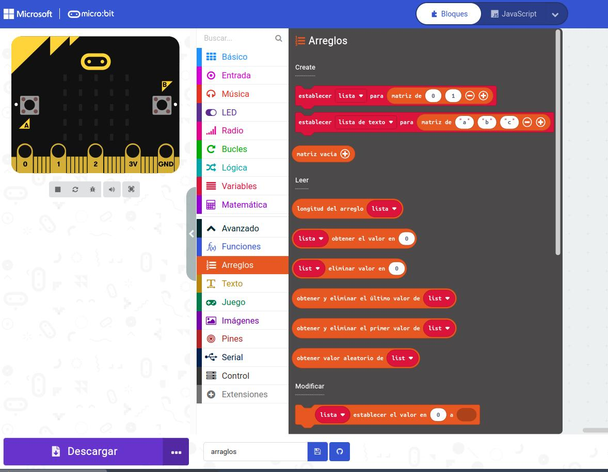

¿Sabes que la placa dispone de un sensor de temperatura? Este sensor es muy practico que las casas o los coches inteligentes pongan en marcha sus actuadores para refrigerar.
¿Sabes que la placa dispone de un sensor de temperatura? Este sensor es muy practico que las casas o los coches inteligentes pongan en marcha sus actuadores para refrigerar.
¿Se te ocurre alguna aplicación?
¿Sabes que la placa dispone de un sensor de temperatura? Este sensor es muy practico que las casas o los coches inteligentes pongan en marcha sus actuadores para refrigerar.
¿Se te ocurre alguna aplicación?
La microbit debe medir la temperatura ambiente cada cierto tiempo durante todo el día. Cómo no tienes todo el día puedes medir cada minuto.
Para obtener diferentes temperaturas puede calentar la placa con tus manos o sacarla al sol, así observarás la diferencia de temperatura. Si estuvieras en casa podríamos medir dentro de la nevera. (o si tienes un vaso con hielo siempre que no toquen los circuitos el agua)
Al pulsar el botón A debe devolver la temperatura más alta y al pulsar la B la mas baja. Debe iluminar un punto en la pantalla LED cada vez que realice una medición, realizar al menos cinco.
Este programa utiliza tres variables para almacenar temperaturas: temp. actual, max es la máxima y min es la mínima. cada vez que la temperatura actual es mayor que la máxima se intercambia el valor. Igual con la mínima.
Los sistemas meteorológicos reciben información de los satélites de todo el mundo pudiendo realizar las predicciones oportunas para señalar las altas presiones o las bajas, así se detectan los anticiclones o las borrascas.
Vamos a realizar el ejercicio con cuatro microbit. Tres van a emitir sus datos a la cuarta que será la placa receptora. Cada placa tiene que enviar su medición máxima, mínima y su número de identificación (puedes usar 1,2,3). Queremos saber el lugar o placa que está obteniendo las mayores temperaturas y las mínimas.
Las listas son un tipo de variables, es decir, guardan datos. Pero más de uno. Es el bloque que corresponde a Arreglos.

Una lista tiene muchos valores guardados y se referencian mediante su posición.
Por ejemplo, ¿Qué haría este programa?
Obra publicada con Licencia Creative Commons Reconocimiento Compartir igual 4.0